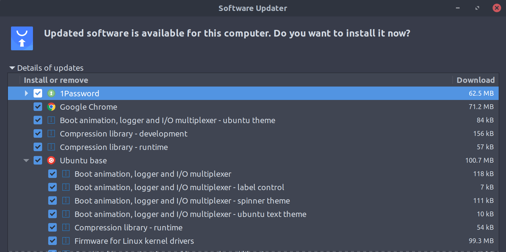

meh.dev
meh.dev
This is a living post about linux topics which inhibit linux distros from reaching the masses and my take on them. In no particular order…
Packaging
Having access to quality packages is my favorite things about using linux. But it comes with some issues.
-
A big issue is the support between distributions. Ubuntu is pretty ubiquitously supported but most distros are not.
-
For Ubuntu users their distro is most likely supported but the way to install an application is not universal. This is actually getting somewhat worse currently. Many applications are now distributed via snap, apt, AppImages, or a plain old binary.
-
Another drawback is for maintainers, it’s super complex for a popular package to support every potential distro which takes time away from their project. This makes development less popular and harder for the ones willing to do it.
Updates
Linux makes updates scarier then they need to be by displaying too much information.
Information overload is a real thing and it can scare people away from upgrading or scare people away entirely.
One nuisance I have with distribution updates (at least on Ubuntu) is that custom sources added to apt get disabled with each update. Then I have to manually inspect and re-enable each one.

I actually kinda enjoy seeing what’s being updated, but this is somewhat a regression for Google Chrome which receives updates so regularly. On Windows and Linux it just updates itself and occasionally prompts to be restarted. On linux having to wait for me to trigger it’s update besides being inconvenient is also a security hazard. 👎
Graphics drivers
The graphics drivers on linux are getting pretty great and I think this is almost a solved problem as of 2020.
The main hurdle is for proprietary drivers which don’t typically come preinstalled. Some distros are now including these drivers though or have easy way to install them which mostly resolves this issue.
Information overload is still an issue with this too. Custom drivers still require the user to click some things to install them, it’s not quite plug & play.
Enterprise
Enterprise support is pretty lacking still, a lot of the host management that IT departments want doesn’t work well or isn’t sufficient especially for power users who cant have a totally locked down environment.